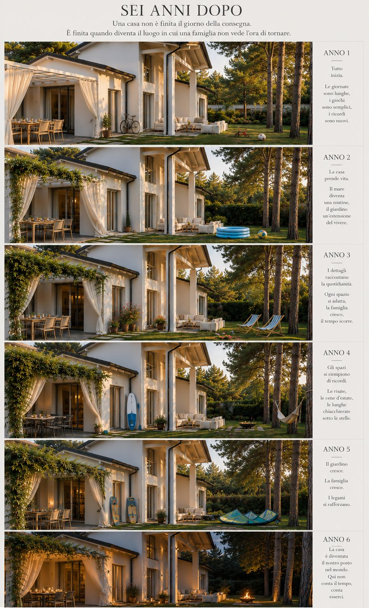
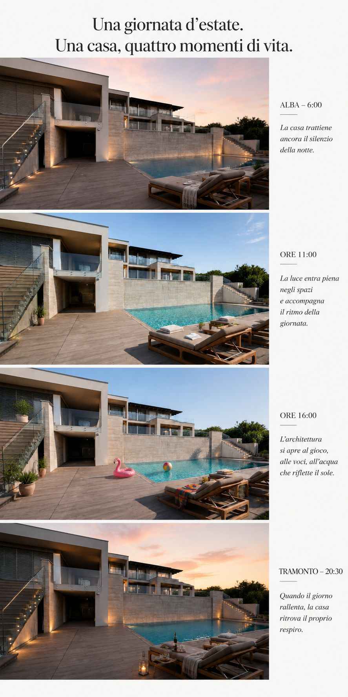
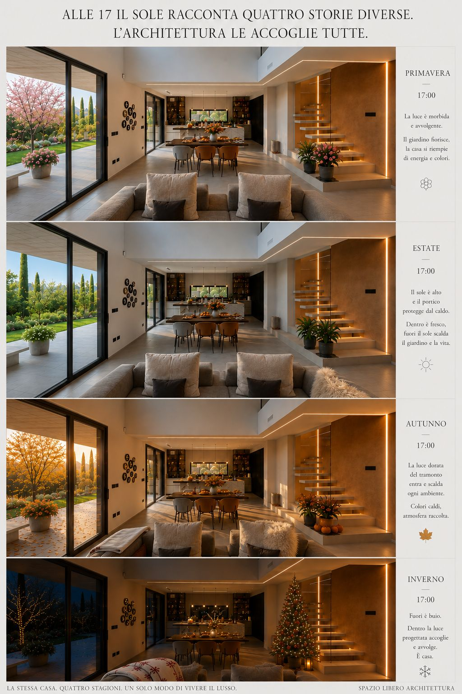

Una casa attraversa il tempo.
Se è progettata bene, lo fa con naturalezza.
Quando progettiamo una casa la rappresentiamo sempre in un momento preciso. Un’immagine, un disegno, un render fermano inevitabilmente un istante. Ma una casa vera non sarà mai così. Cambieranno le ore del giorno, la luce, le stagioni. Crescerà il giardino. Cambieranno alcune abitudini e probabilmente cambieranno anche le persone che la abitano.
Per questo, mentre progettiamo, cerchiamo di immaginarla anche dopo. Non soltanto il giorno in cui sarà terminata, ma negli anni che verranno.
Attraversa gli anni.
Una casa appena costruita è quasi troppo perfetta. Il giardino è giovane, gli spazi sono ordinati, ogni cosa sembra essere esattamente nel posto in cui era stata pensata.
Poi comincia la vita. Arrivano oggetti che nel progetto non c’erano, piante che crescono, giochi lasciati fuori, biciclette, tavoli spostati. Alcune abitudini cambiano e altre diventano così naturali da sembrare essere sempre esistite.
È proprio questo che dovrebbe riuscire a fare una buona casa: lasciare spazio alla vita senza perdere la propria identità.
Le immagini che abbiamo costruito sono volutamente simulate. Non vogliono prevedere il futuro. Provano piuttosto a raccontare una domanda che per noi fa parte del progetto: questa casa funzionerà ancora bene quando chi la abita sarà cambiato?

Attraversa la giornata.
Anche nell’arco di poche ore una casa non è mai la stessa. Al mattino alcune stanze ricevono la prima luce mentre altre rimangono più raccolte. A metà giornata il sole entra con maggiore decisione. Nel pomeriggio cambiano le ombre, e alla sera è la luce artificiale a costruire un altro modo di percepire gli stessi spazi.
Orientamento, aperture, profondità dei portici e protezioni solari non servono quindi soltanto a comporre una facciata. Determinano come quella casa potrà essere vissuta durante tutta la giornata.
Una stanza piacevole alle undici del mattino dovrebbe esserlo anche alle cinque del pomeriggio. Magari in modo completamente diverso. Ed è proprio questa differenza che ci interessa.

Attraversa le stagioni.
Poi ci sono le stagioni, che cambiano ancora una volta il rapporto tra interno ed esterno. In inverno cerchiamo il sole e siamo felici quando riesce ad entrare profondamente nella casa. In estate chiediamo alla stessa architettura di proteggerci. Primavera e autunno sono invece i momenti nei quali il confine fra dentro e fuori tende quasi a scomparire.
Il progetto deve riuscire a tenere insieme condizioni apparentemente opposte.
La stessa finestra che porta luce in inverno deve poter essere protetta dal sole estivo. Lo stesso portico che crea ombra nei mesi caldi non dovrebbe sottrarre alla casa la luce quando ne abbiamo bisogno.
Non esiste quindi una sola immagine della casa. Ne esistono molte, e cambiano continuamente.

Forse è questo il punto.
Noi siamo abituati a mostrare l’architettura attraverso immagini immobili, ma una casa non è un oggetto immobile.
Ha mattine e sere. Ha estati e inverni. Ha anni in cui i bambini giocano in giardino e altri in cui quel giardino verrà usato diversamente. Ci saranno oggetti che arriveranno e altri che spariranno.
Il progetto non può sapere tutto questo in anticipo.
Può però fare una cosa molto importante: lasciare che possa accadere.